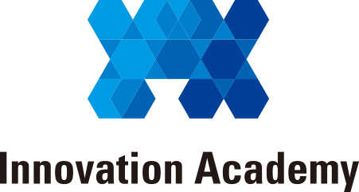

오픈소스 공개
코드와 지침을 함께 공유
개발자 누구나 참여·기여
SafeHandoff는 조직별 온프레미스 인프라에 설치·운영하는 오픈소스 프로젝트입니다.
원자료를 내부에 두고, 안전한 자료 준비와 업무 생산성 향상을 돕는 방향으로 확장합니다.
코드와 지침을 함께 공유
개발자 누구나 참여·기여
각자의 인프라·사내 모델 연결
원자료와 승인 결정은 내부에
업무별 스킬·검증 사례 축적
개선한 도구와 규칙을 환원
개발자 참여와 정보보호 현장을 잇는 협력 방향
정보보호 현장 수요·검증 사례
오픈소스·정보보호의 공공 확산

개발자 커뮤니티·오픈소스 기여